Tabela de Pinos - ESP32
Configuração de Pinos do ESP32
| GPIO | Nome no Código | Tipo | Função | Status / Observação |
|---|---|---|---|---|
GPIO 22 |
PIN_ESTEIRA |
Saída | Transporte de peças | Normal |
GPIO 23 |
PIN_TRAVA |
Saída | Trava de segurança | ⚠️ INVERTIDA: LOW = trava ativa |
GPIO 19 |
PIN_ATUADOR_FRENTE |
Saída | Movimento para frente | Normal |
GPIO 5 |
PIN_ATUADOR_TRAS |
Saída | Movimento para trás | Normal |
GPIO 21 |
PIN_DIVISOR |
Saída | Separação de peças metálicas | Normal |
GPIO 18 |
PIN_PINO |
Saída | Pino auxiliar | Normal |
GPIO 33 |
PIN_SENSOR_OP2 |
Entrada | Sensor de proximidade (posição) | INPUT_PULLUP |
GPIO 39 |
PIN_SENSOR_METAL |
Entrada | Sensor metálico (indutivo) | INPUT_PULLUP |
Vídeo: Funcionamento da Festo MPS-C
Este vídeo mostra todo o processo de funcionamento da máquina Festo MPS-C, desde a detecção da peça até a separação final, explicando cada etapa em detalhes.
Componentes da Festo MPS-C
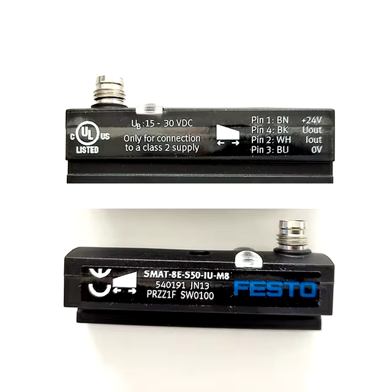
SENSOR DE POSIÇÃO SMAT-8E-S50-1U-M8
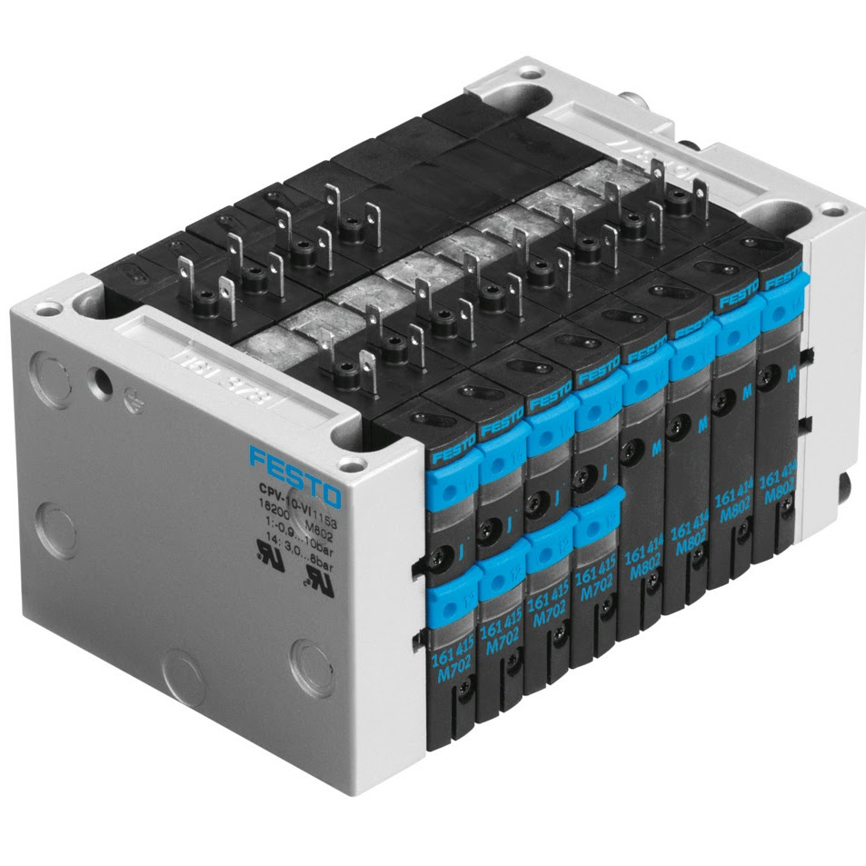
TERMINAL DE VÁLVULAS CPV10-VI
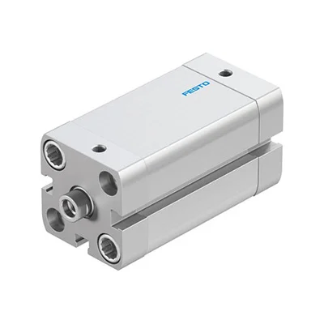
CILINDRO DE AR ADN-12-40-IPA
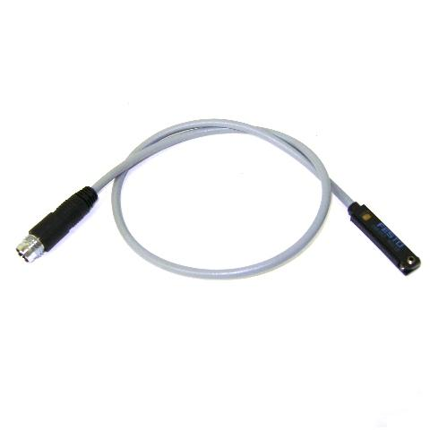
SENSOR DE PROXIMIDADE SME-8-S-LED-24
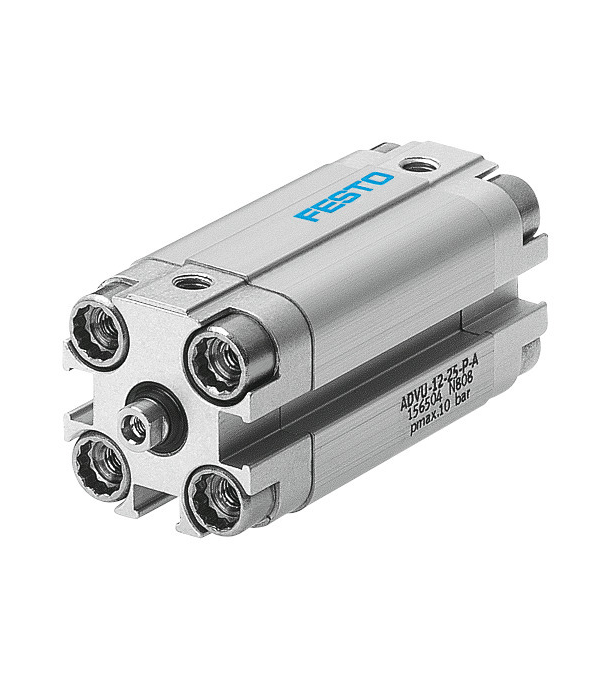
CILINDRO COMPACTO ADVU-16-10-PA
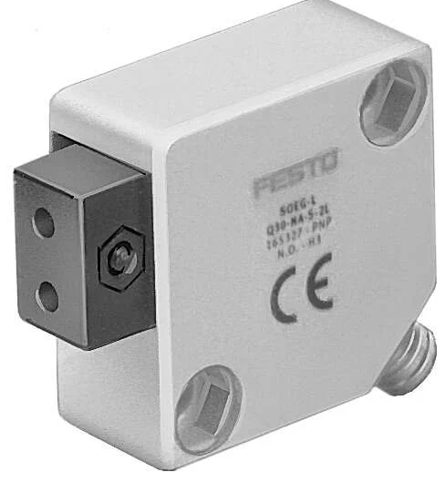
SENSOR DE FIBRA ÓPTICA OEG-L-Q30-P-A-S-2L
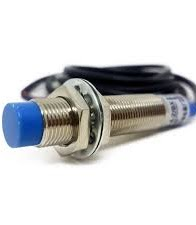
Sensor Metálico Indutivo NPN
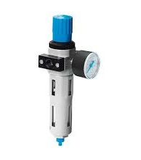
VÁLVULA PNEUMÁTICA LFR-1-D-5M-MAXI
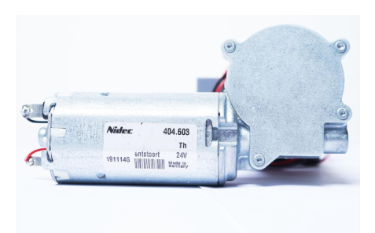
DC-Motor Nidec 24VDC 404.603
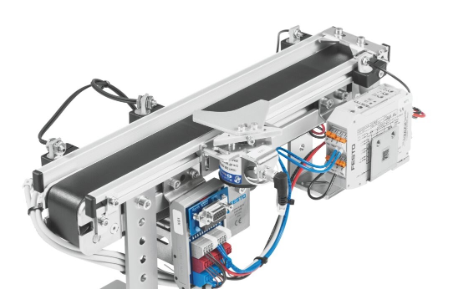
Módulo Transportador
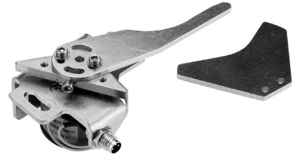
Módulo Separador
Funcionamento dos Sensores e Atuadores
Sensor de Proximidade 1
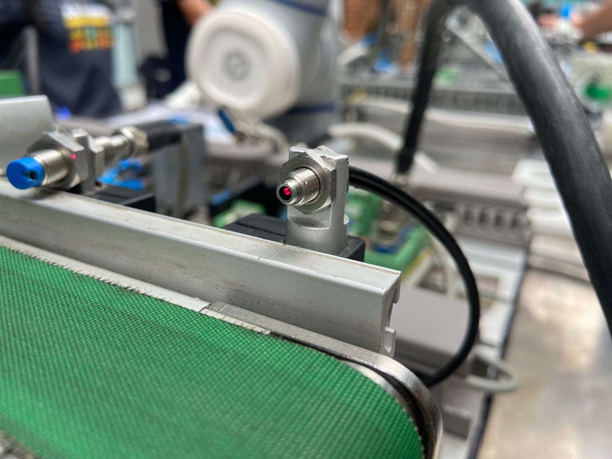
Função: Sensor de proximidade que identifica a chegada da peça no início do processo.
O que faz: Quando detecta uma peça, envia o sinal para:
- Acionar a esteira para transportar a peça
- Iniciar o ciclo de automação
- Preparar os próximos sensores para leitura
Fluxo: Sensor 1 → Esteira liga
Sensor de Proximidade 2

Função: Sensor de proximidade que verifica se a peça chegou na posição correta para o teste metálico.
O que faz:
- Confirma que a peça está posicionada
- Prepara o sensor metálico para fazer a leitura
- Indica que a peça está pronta para a próxima etapa
Fluxo: Sensor 2 → Sensor Metálico ativado
Sensor Metálico (Indutivo)
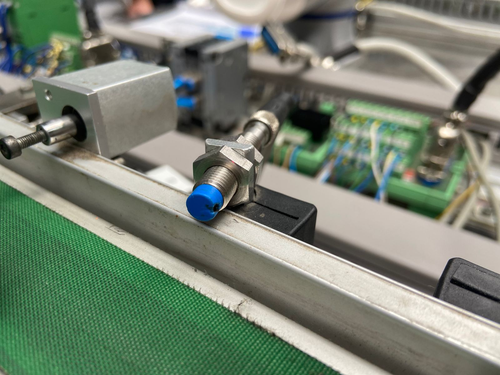
Função: Verifica se a peça é metálica ou não.
O que faz:
- Detecta materiais metálicos por indução
- Envia a informação para o sensor de verificação
- Determina o próximo passo do processo
Fluxo: Sensor 3 → Sensor Verificação (informação do material)
Trava Pneumática
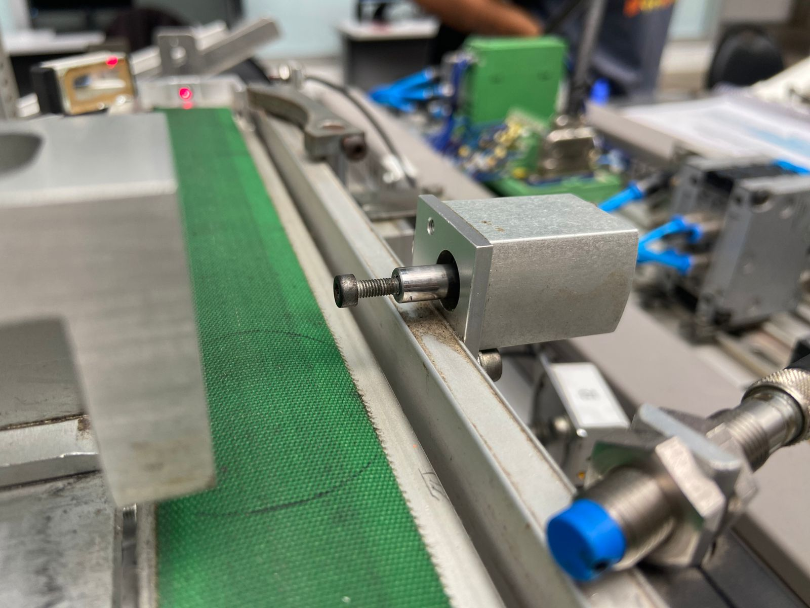
Função: Impedir que a peça continue na esteira durante o processo de verificação.
O que faz:
- ACIONA ANTES DO ATUADOR - Esta é a sequência correta
- Bloqueia fisicamente a passagem da peça
- Garante que a peça fique parada para o teste
- Desativa após a verificação para liberar a peça
Fluxo: Sensor 2 ativo → Trava aciona → Atuador pode agir
Atuador Pneumático
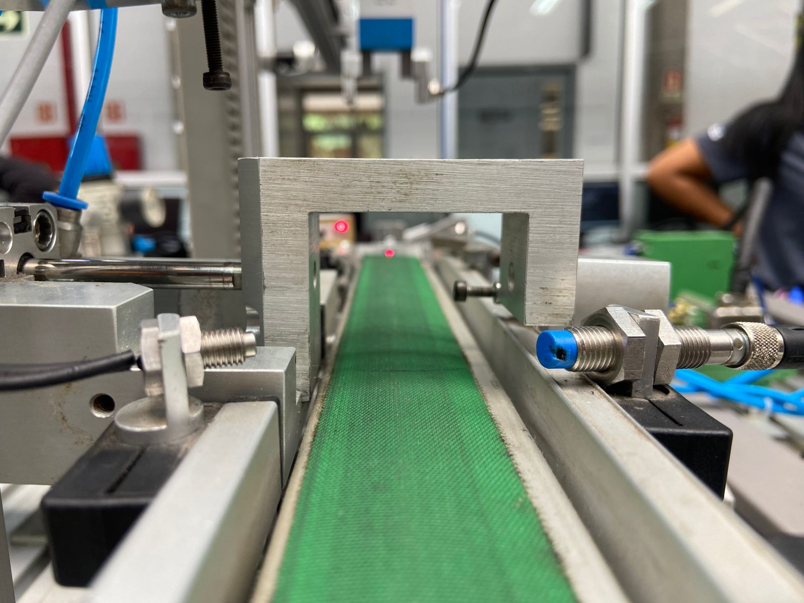
Função: Mover a peça para a posição correta ou desviá-la conforme necessário.
O que faz:
- ACIONADO ASSIM QUE A TRAVA É ATIVADA
- Puxa a peça para a área de verificação
- Aguarda o resultado do sensor metálico
- Move para frente para devolver a peça à esteira
Fluxo: Trava ativa → Atuador puxa peça → Aguarda comando
Sensor de Verificação
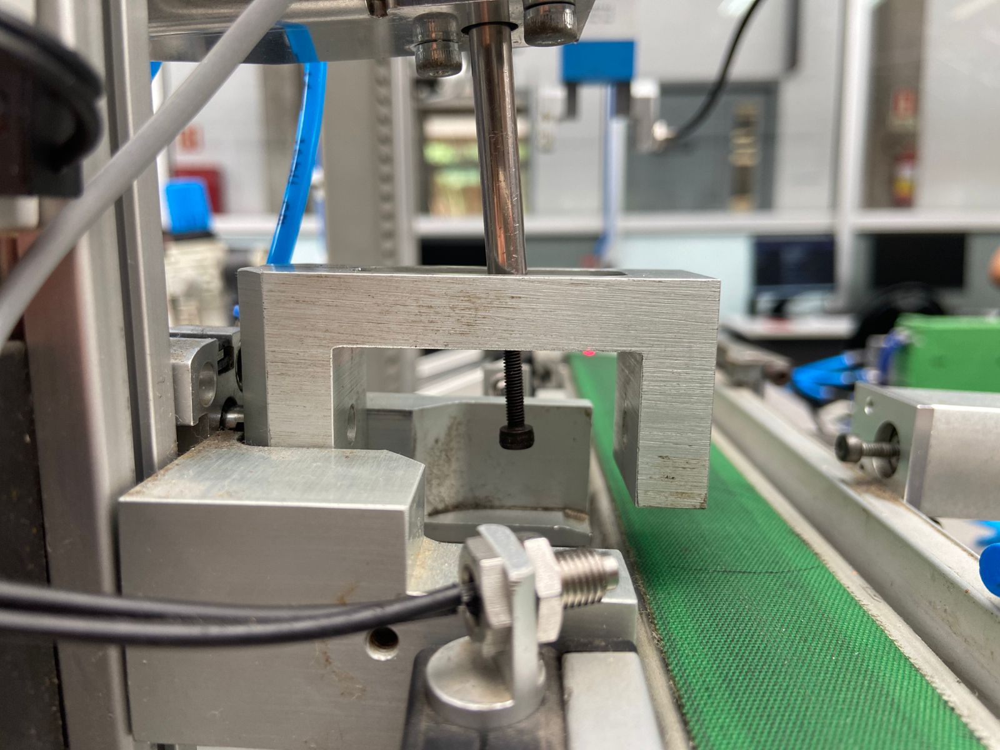
Função: Verifica o lado da peça e toma a decisão final com base nas informações recebidas.
O que faz:
- Recebe a informação do sensor metálico (peça metálica ou não)
- Verifica se o lado da peça está correto
- TRAVA É DESATIVADA para liberar a peça
- Se a peça estiver correta, atuador vai para frente
- Atuador devolve a peça para a esteira
- Se incorreta, pode acionar outro mecanismo (rejeição)
Fluxo: Sensor 3 → Sensor 6 decide → Trava desliga → Atuador frente
Ciclo Completo
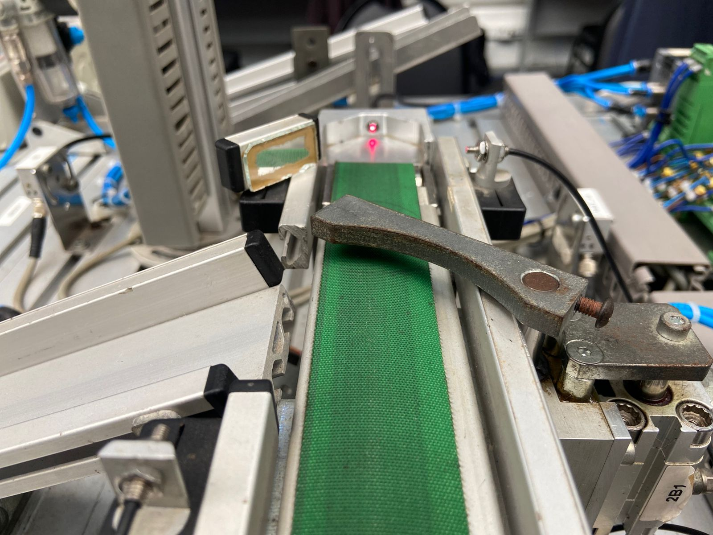
Função: Integração de todos os sensores para o funcionamento correto.
Fluxo completo do processo:
- Sensor 1: Detecta peça → Esteira liga
- Sensor 2: Peça chegou na posição
- Sensor 3 (Metálico): Verifica se é metálica → Envia info para Sensor 6
- Trava: Aciona para segurar a peça
- Atuador: Puxa a peça para verificação
- Sensor 6 (Verificação):
- Recebe informação do sensor metálico
- Verifica lado da peça
- Trava desativada (libera peça)
- Atuador vai para frente e devolve peça à esteira
- Sensor 3 (Metálico) novamente: Passa a informação final para confirmar se a peça continua na esteira ou se será acionado novamente para rejeição
Sequência correta é fundamental: Trava SEMPRE aciona ANTES do atuador!
Dicas de Operação
Checklist Pré-Operação
Verifique estes itens antes de ligar a máquina:
Verificar pressão e ar
Confira se a pressão do ar comprimido está entre 4-6 bar e se a válvula de ar está aberta
Verificar cabos
Todos os cabos de alimentação, dados e sensores estão firmemente conectados
Verificar emergência
Botão de emergência não está acionado e chave geral está ligada
Verificar sensores
Sensores estão limpos e desobstruídos para leitura correta
Verificar ESP32
Conexão USB ativa e comunicação serial funcionando
Dicas Importantes
Sempre desligue a pressão de ar antes de mexer nas conexões pneumáticas
Nunca force os atuadores manualmente quando o sistema estiver pressurizado
Mantenha a área de trabalho limpa e organizada para evitar acidentes
Verifique se não há obstruções no caminho das peças antes de iniciar
Em caso de comportamento inesperado, acione o botão de emergência imediatamente